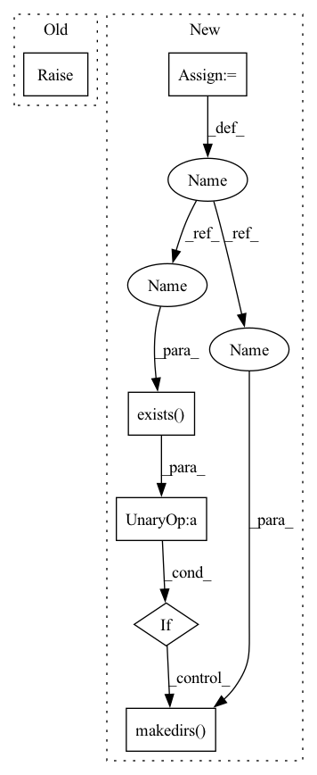

Pattern ID :14756
Before Change
@property
def ds_dir(self):
raise NotImplementedError
@property
def DATASETS(self):After Change
@property
def ds_dir(self):
_dir = os.path.join(self.base_ds_dir, self.__class__.__name__)
if not os.path.exists(_dir) :
os.makedirs(_dir )
return _dir
@property
def DATASETS(self):In pattern: SUPERPATTERN
Frequency: 3
Non-data size: 6
Instances Fragment ID: 48505241
Project Name: atrcheema/ai4water
Commit Name: 9935a2378d37651eb6de1e3a85cb1ffb833cee72
Time: 2021-02-16
Author: ather_abbas786@yahoo.com
File Name: dl4seq/utils/datasets.py
M Class Name: Datasets
N Class Name: Datasets
M Method Name: ds_dir(1)
N Method Name: ds_dir(1)
M Parent Class: object
N Parent Class: object
M File Name: dl4seq/utils/datasets.py
N File Name: dl4seq/utils/datasets.py
M Start Line: 119
M End Line: 119
N Start Line: 121
N End Line: 124
Before Change
):
if use_existing_trainer:
train_trainer = self.trainers["train"]
raise NotImplementedError()
else:
if not root_dir:
root_dir = f"{self.exp_dir}/checkpoints"After Change
):
self.logger_and_callbacks["logger"].experiment.finish()
if save_path is not None:
root_path = os.path.dirname(f"{self.exp_dir}/{save_path}")
if not os.path.exists(root_path) :
os.makedirs( root_path)
torch.save(self.model.state_dict(), f"{self.exp_dir}/{save_path}")
return res
def predict( Fragment ID: 48505242
Project Name: krenerd/awesome-modular-pytorch-lightning
Commit Name: 42153bc05718dcfa90fa3620fdbf9bd8f28d813c
Time: 2022-06-13
Author: 48239275+krenerd@users.noreply.github.com
File Name: main.py
M Class Name: Experiment
N Class Name: Experiment
M Method Name: train(7)
N Method Name: train(6)
M Parent Class:
N Parent Class:
M File Name: main.py
N File Name: main.py
M Start Line: 183
M End Line: 187
N Start Line: 297
N End Line: 342
Before Change
@property
def ds_dir(self):
raise NotImplementedError
@property
def DATASETS(self):After Change
@property
def ds_dir(self):
_dir = os.path.join(self.base_ds_dir, self.__class__.__name__)
if not os.path.exists(_dir) :
os.makedirs( _dir)
return _dir
@property
def DATASETS(self): Fragment ID: 48505243
Project Name: atrcheema/dl4seq
Commit Name: 9935a2378d37651eb6de1e3a85cb1ffb833cee72
Time: 2021-02-16
Author: ather_abbas786@yahoo.com
File Name: dl4seq/utils/datasets.py
M Class Name: Datasets
N Class Name: Datasets
M Method Name: ds_dir(1)
N Method Name: ds_dir(1)
M Parent Class: object
N Parent Class: object
M File Name: dl4seq/utils/datasets.py
N File Name: dl4seq/utils/datasets.py
M Start Line: 119
M End Line: 119
N Start Line: 121
N End Line: 124